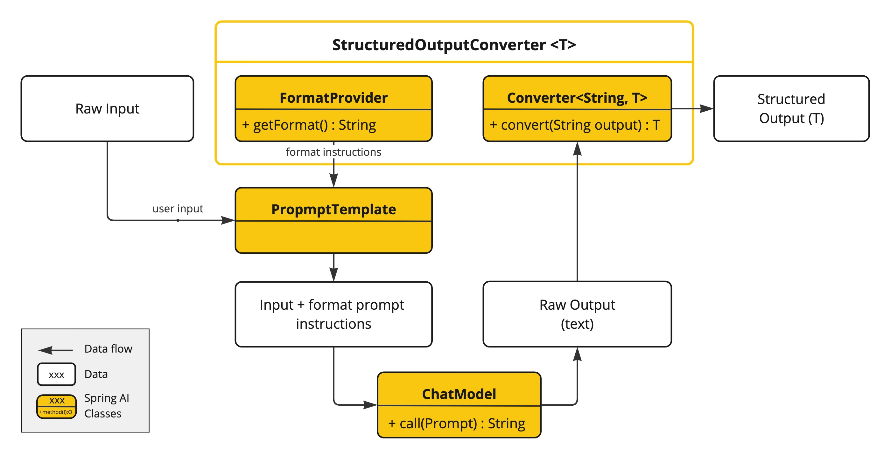
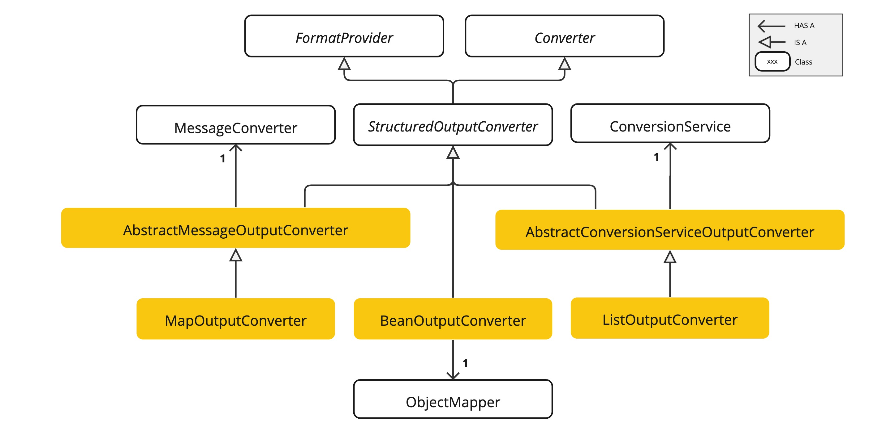

结构化输出转换器 #
LLM 生成结构化输出的能力对于依赖可靠解析输出值的下游应用程序非常重要。开发人员希望将 AI 模型的结果快速转换为数据类型，例如 JSON、XML 或 Java 类，这些数据类型可以传递给其他应用程序函数和方法。
Spring AI 结构化输出转换器有助于将 LLM 输出转换为结构化格式。如下图所示，此方法围绕 LLM 文本完成端点运行：
使用通用完成 API 从大型语言模型 （LLM） 生成结构化输出需要仔细处理输入和输出。结构化输出转换器在 LLM 调用之前和之后起着至关重要的作用，确保实现所需的输出结构。
在 LLM 调用之前，转换器会将格式说明附加到提示符中，为模型生成所需的输出结构提供明确的指导。这些指令充当蓝图，调整模型的响应以符合指定的格式。
在 LLM 调用之后，转换器获取模型的输出文本并将其转换为结构化类型的实例。此转换过程包括解析原始文本输出并将其映射到相应的结构化数据表示形式，例如 JSON、XML 或特定于域的数据结构。
结构化输出 API #
StructuredOutputConverter 接口允许您获取结构化输出，例如将输出映射到基于文本的 AI 模型输出中的 Java 类或值数组。接口定义为：
public interface StructuredOutputConverter<T> extends Converter<String, T>, FormatProvider {
}
它结合了 Spring [
Converter<String、T>](
https://docs.spring.io/spring-framework/docs/current/javadoc-api/org/springframework/core/convert/converter/Converter.html) 接口和 FormatProvider 接口
public interface FormatProvider {
String getFormat();
}
下图显示了使用结构化输出 API 时的数据流。

FormatProvider 为 AI 模型提供特定的格式设置准则，使其能够生成文本输出，这些输出可以使用 Converter 转换为指定的目标类型 T。以下是此类格式设置说明的示例：
格式说明通常使用 [
PromptTemplate](prompt.html#_prompttemplate) 附加到用户输入的末尾，如下所示：
StructuredOutputConverter outputConverter = ...
String userInputTemplate = """
... user text input ....
{format}
"""; // user input with a "format" placeholder.
Prompt prompt = new Prompt(
new PromptTemplate(
this.userInputTemplate,
Map.of(..., "format", outputConverter.getFormat()) // replace the "format" placeholder with the converter's format.
).createMessage());
Converter<String， T> 负责将模型的输出文本转换为指定类型 T 的实例。
可用转换器 #
目前，Spring AI 提供了 AbstractConversionServiceOutputConverter 、、 AbstractMessageOutputConverter BeanOutputConverter、MapOutputConverter 和 ListOutputConverter 实现：

- AbstractConversionServiceOutputConverter
- 提供预配置的 GenericConversionService，用于将 LLM 输出转换为所需的格式。未提供默认的 FormatProvider 实现。 - AbstractMessageOutputConverter
- 提供预配置的 MessageConverter，用于将 LLM 输出转换为所需的格式。未提供默认的 FormatProvider 实现。 - BeanOutputConverter
- 配置了指定的 Java 类（例如 Bean）或 ParameterizedTypeReference，此转换器采用 FormatProvider 实现，该实现指示 AI 模型生成符合 DRAFT_2020_12 的 JSON 响应，该响应从指定的 Java 类派生的 JSON 架构 。随后，它利用 ObjectMapper 将 JSON 输出反序列化为目标类的 Java 对象实例。 - MapOutputConverter - AbstractMessageOutputConverter 使用 FormatProvider 实现扩展其功能，该实现指导 AI 模型生成符合 RFC8259 的 JSON 响应。此外，它还包含一个转换器实现，该实现利用提供的 MessageConverter 将 JSON 有效负载转换为 java.util.Map<String， Object> 实例。
- ListOutputConverter - 扩展 AbstractConversionServiceOutputConverter 并包含为逗号分隔的列表输出量身定制的 FormatProvider 实现。转换器实现使用提供的 ConversionService 将模型文本输出转换为 java.util.List。
使用转换器 #
以下部分提供了如何使用可用转换器生成结构化输出的指南。
Bean 输出转换器 #
下面的示例演示如何使用 BeanOutputConverter 为 Actor 生成电影作品。
表示演员电影作品的目标记录：
record ActorsFilms(String actor, List<String> movies) {
}
以下是如何使用高级、流畅的 ChatClient API 应用 BeanOutputConverter：
ActorsFilms actorsFilms = ChatClient.create(chatModel).prompt()
.user(u -> u.text("Generate the filmography of 5 movies for {actor}.")
.param("actor", "Tom Hanks"))
.call()
.entity(ActorsFilms.class);
或直接使用低级 ChatModel API：
BeanOutputConverter<ActorsFilms> beanOutputConverter =
new BeanOutputConverter<>(ActorsFilms.class);
String format = this.beanOutputConverter.getFormat();
String actor = "Tom Hanks";
String template = """
Generate the filmography of 5 movies for {actor}.
{format}
""";
Generation generation = chatModel.call(
new PromptTemplate(this.template, Map.of("actor", this.actor, "format", this.format)).create()).getResult();
ActorsFilms actorsFilms = this.beanOutputConverter.convert(this.generation.getOutput().getText());
生成的架构中的属性排序 #
BeanOutputConverter 支持通过 @JsonPropertyOrder 注解在生成的 JSON 模式中进行自定义属性排序。此注释允许您指定属性在架构中出现的确切顺序，而不管它们在类或记录中的声明顺序如何。
例如，要确保 ActorsFilms 记录中属性的特定排序：
@JsonPropertyOrder({"actor", "movies"})
record ActorsFilms(String actor, List<String> movies) {}
此 Annotation 适用于记录和常规 Java 类。
泛型 Bean 类型 #
使用 ParameterizedTypeReference 构造函数指定更复杂的目标类结构。例如，要表示演员及其电影作品的列表：
List<ActorsFilms> actorsFilms = ChatClient.create(chatModel).prompt()
.user("Generate the filmography of 5 movies for Tom Hanks and Bill Murray.")
.call()
.entity(new ParameterizedTypeReference<List<ActorsFilms>>() {});
或直接使用低级 ChatModel API：
BeanOutputConverter<List<ActorsFilms>> outputConverter = new BeanOutputConverter<>(
new ParameterizedTypeReference<List<ActorsFilms>>() { });
String format = this.outputConverter.getFormat();
String template = """
Generate the filmography of 5 movies for Tom Hanks and Bill Murray.
{format}
""";
Prompt prompt = new PromptTemplate(this.template, Map.of("format", this.format)).create();
Generation generation = chatModel.call(this.prompt).getResult();
List<ActorsFilms> actorsFilms = this.outputConverter.convert(this.generation.getOutput().getText());
贴图输出转换器 #
以下代码片段显示了如何使用 MapOutputConverter 将模型输出转换为地图中的数字列表。
Map<String, Object> result = ChatClient.create(chatModel).prompt()
.user(u -> u.text("Provide me a List of {subject}")
.param("subject", "an array of numbers from 1 to 9 under they key name 'numbers'"))
.call()
.entity(new ParameterizedTypeReference<Map<String, Object>>() {});
或直接使用低级 ChatModel API：
MapOutputConverter mapOutputConverter = new MapOutputConverter();
String format = this.mapOutputConverter.getFormat();
String template = """
Provide me a List of {subject}
{format}
""";
Prompt prompt = new PromptTemplate(this.template,
Map.of("subject", "an array of numbers from 1 to 9 under they key name 'numbers'", "format", this.format)).create();
Generation generation = chatModel.call(this.prompt).getResult();
Map<String, Object> result = this.mapOutputConverter.convert(this.generation.getOutput().getText());
列出输出转换器 #
以下代码段显示了如何使用 ListOutputConverter 将模型输出转换为冰淇淋口味列表。
List<String> flavors = ChatClient.create(chatModel).prompt()
.user(u -> u.text("List five {subject}")
.param("subject", "ice cream flavors"))
.call()
.entity(new ListOutputConverter(new DefaultConversionService()));
或直接使用低级 ChatModel API：
ListOutputConverter listOutputConverter = new ListOutputConverter(new DefaultConversionService());
String format = this.listOutputConverter.getFormat();
String template = """
List five {subject}
{format}
""";
Prompt prompt = new PromptTemplate(this.template,
Map.of("subject", "ice cream flavors", "format", this.format)).create();
Generation generation = this.chatModel.call(this.prompt).getResult();
List<String> list = this.listOutputConverter.convert(this.generation.getOutput().getText());
支持的 AI 模型 #
以下 AI 模型已经过测试，可支持 List、Map 和 Bean 结构化输出。
内置 JSON 模式 #
一些 AI 模型提供专用的配置选项来生成结构化（通常是 JSON）输出。
- OpenAI 结构化输出可以确保您的模型生成严格符合您提供的 JSON 架构的响应。您可以选择保证模型生成的消息是有效 JSON 的 JSON_OBJECT，也可以选择 JSON_SCHEMA 提供的架构，以保证模型将生成与您提供的架构匹配的响应（ spring.ai.openai.chat.options.responseFormat 选项）。
- Azure OpenAI - 提供指定模型必须输出的格式 spring.ai.azure.openai.chat.options.responseFormat 的选项。设置为 { “type”： “json_object” } 将启用 JSON 模式，从而保证模型生成的消息是有效的 JSON。
- Ollama - 提供一个 spring.ai.ollama.chat.options.format 选项，用于指定返回响应的格式。目前，唯一接受的值是 json。
- Mistral AI - 提供一个 spring.ai.mistralai.chat.options.responseFormat 选项，用于指定返回响应的格式。将其设置为 { “type”： “json_object” } 将启用 JSON 模式，从而保证模型生成的消息是有效的 JSON。